2024 National 5 Biology - Paper 1 questions
Source: Scottish Qualifications Authority (SQA) / Qualifications Scotland. This is a StemInteract HTML companion, not an official HTML edition. Selectable text is supplied alongside original page images. Use the images or original PDF for equations, powers, fractions, vector notation, tables and diagrams; text extraction cannot fully preserve mathematical layout.
Jump to a question
PDF page 1
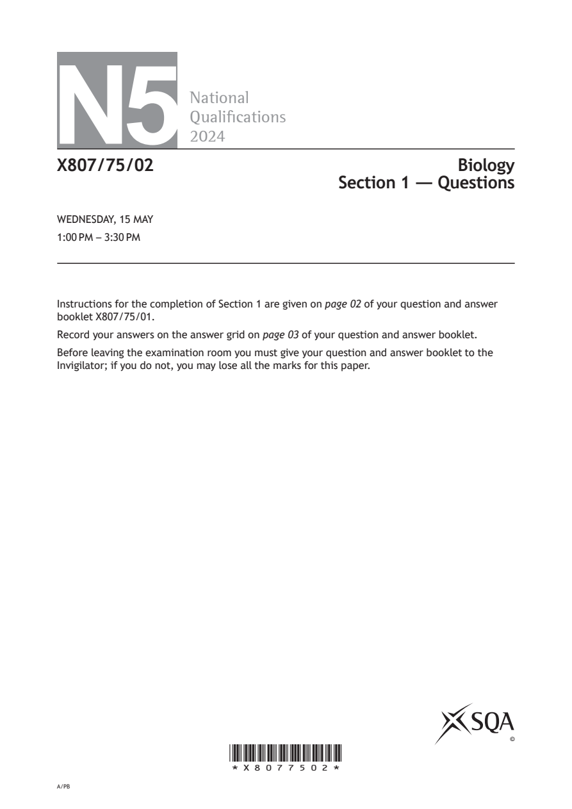
Selectable page text
N5
National
Qualications
2024
X807/75/02 Biology
Section 1 — Questions
WEDNESDAY, 15 MAY
1:00 PM – 3:30 PM
Instructions for the completion of Section 1 are given on page 02 of your question and answer
booklet X807/75/01.
Record your answers on the answer grid on page 03 of your question and answer booklet.
Before leaving the examination room you must give your question and answer booklet to the
Invigilator; if you do not, you may lose all the marks for this paper.
©
*X8077502*
A/PBPDF page 2
Paper 1, Question 1Paper 1, Question 2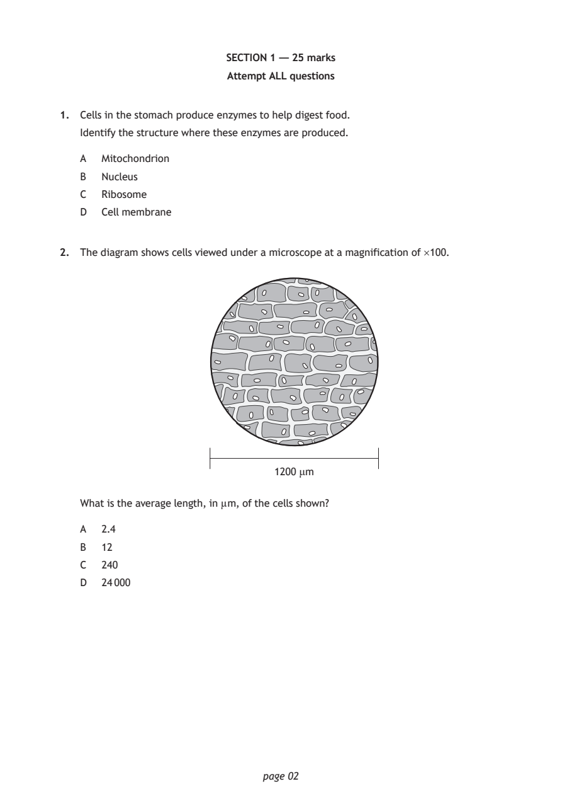
Selectable page text
SECTION 1 — 25 marks
Attempt ALL questions
1. Cells in the stomach produce enzymes to help digest food.
Identify the structure where these enzymes are produced.
A Mitochondrion
B Nucleus
C Ribosome
D Cell membrane
2. The diagram shows cells viewed under a microscope at a magnification of ×100.
1200 μm
What is the average length, in µm, of the cells shown?
A 2.4
B 12
C 240
D 24 000
page 02PDF page 3
Paper 1, Question 3Paper 1, Question 4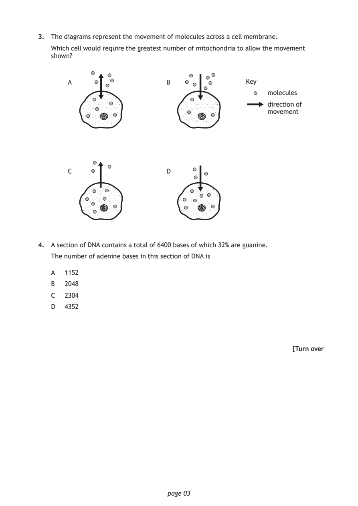
Selectable page text
3. The diagrams represent the movement of molecules across a cell membrane.
Which cell would require the greatest number of mitochondria to allow the movement
shown?
A B Key
molecules
direction of
movement
C D
4. A section of DNA contains a total of 6400 bases of which 32% are guanine.
The number of adenine bases in this section of DNA is
A 1152
B 2048
C 2304
D 4352
[Turn over
page 03PDF page 4
Paper 1, Question 5Paper 1, Question 6Paper 1, Question 7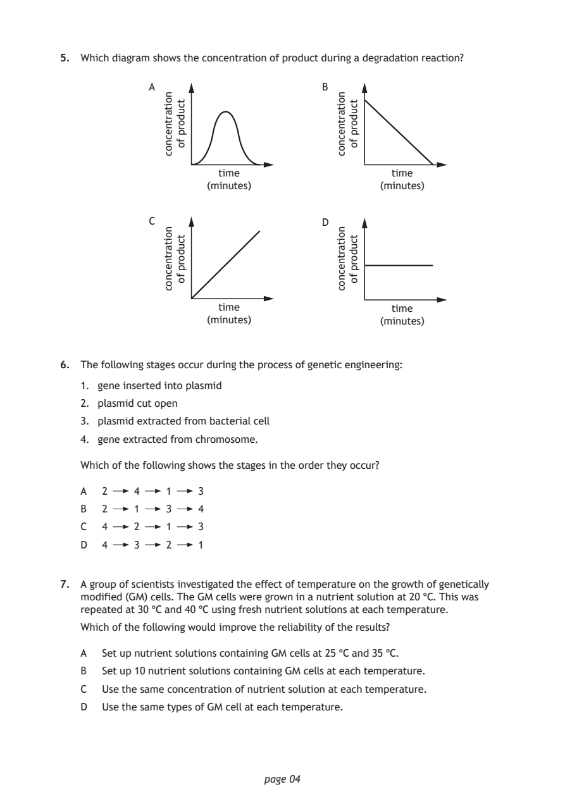
Selectable page text
5. Which diagram shows the concentration of product during a degradation reaction?
A
page 04
noitartnecnoc
noitartnecnoc
tcudorp
fo
tcudorp
fo
noitartnecnoc
noitartnecnoc
tcudorp
fo
tcudorp
fo
B
time time
(minutes) (minutes)
C D
time time
(minutes) (minutes)
6. The following stages occur during the process of genetic engineering:
1. gene inserted into plasmid
2. plasmid cut open
3. plasmid extracted from bacterial cell
4. gene extracted from chromosome.
Which of the following shows the stages in the order they occur?
A 2 4 1 3
B 2 1 3 4
C 4 2 1 3
D 4 3 2 1
7. A group of scientists investigated the effect of temperature on the growth of genetically
modified (GM) cells. The GM cells were grown in a nutrient solution at 20 °C. This was
repeated at 30 °C and 40 °C using fresh nutrient solutions at each temperature.
Which of the following would improve the reliability of the results?
A Set up nutrient solutions containing GM cells at 25 °C and 35 °C.
B Set up 10 nutrient solutions containing GM cells at each temperature.
C Use the same concentration of nutrient solution at each temperature.
D Use the same types of GM cell at each temperature.PDF page 5
Paper 1, Question 8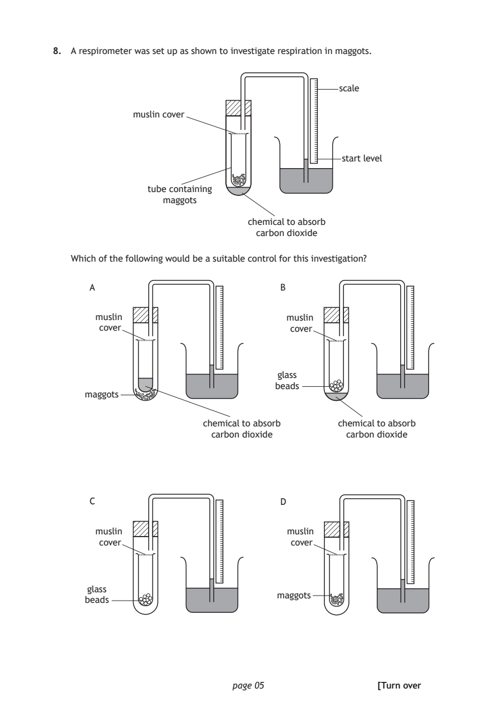
Selectable page text
8. A respirometer was set up as shown to investigate respiration in maggots.
scale
muslin cover
start level
tube containing
maggots
chemical to absorb
carbon dioxide
Which of the following would be a suitable control for this investigation?
A B
muslin muslin
cover cover
glass
beads
maggots
chemical to absorb chemical to absorb
carbon dioxide carbon dioxide
C D
muslin muslin
cover cover
glass
maggots
beads
page 05 [Turn overPDF page 6
Paper 1, Question 9Paper 1, Question 10Paper 1, Question 11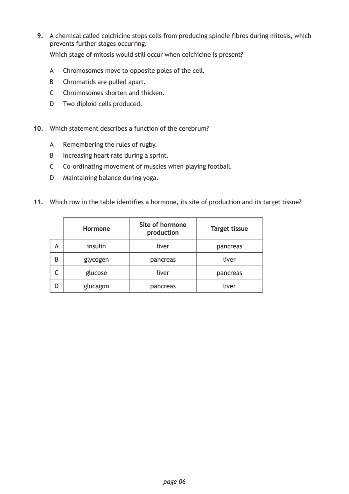
Selectable page text
9. A chemical called colchicine stops cells from producing spindle fibres during mitosis, which
prevents further stages occurring.
Which stage of mitosis would still occur when colchicine is present?
A Chromosomes move to opposite poles of the cell.
B Chromatids are pulled apart.
C Chromosomes shorten and thicken.
D Two diploid cells produced.
10. Which statement describes a function of the cerebrum?
A Remembering the rules of rugby.
B Increasing heart rate during a sprint.
C Co‑ordinating movement of muscles when playing football.
D Maintaining balance during yoga.
11. Which row in the table identifies a hormone, its site of production and its target tissue?
Site of hormone
Hormone Target tissue
production
A insulin liver pancreas
B glycogen pancreas liver
C glucose liver pancreas
D glucagon pancreas liver
page 06PDF page 7
Paper 1, Question 12Paper 1, Question 13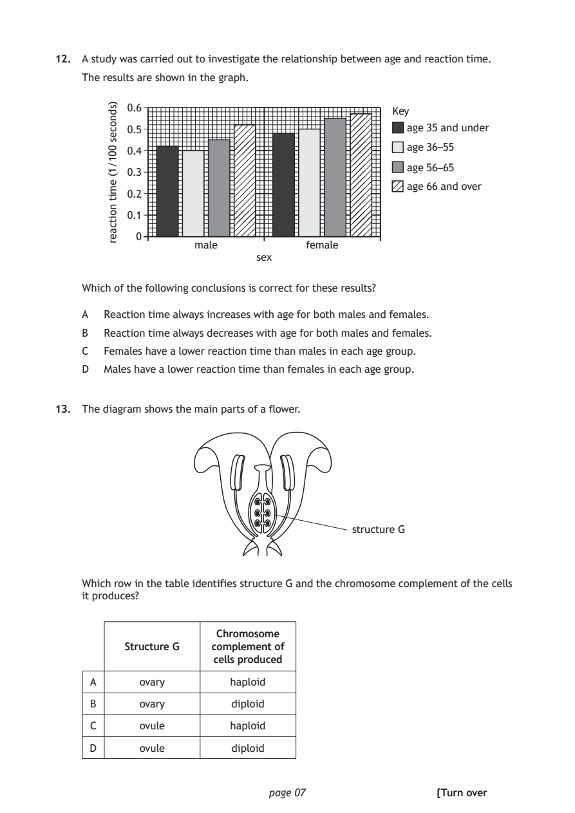
Selectable page text
12. A study was carried out to investigate the relationship between age and reaction time.
The results are shown in the graph.
0.6
Key
0.5 age 35 and under
age 36–55 0.4
age 56–65
0.3
age 66 and over
0.2
0.1
0
male female
sex
page 07
)sdnoces
001/1(
emit
noitcaer
Which of the following conclusions is correct for these results?
A Reaction time always increases with age for both males and females.
B Reaction time always decreases with age for both males and females.
C Females have a lower reaction time than males in each age group.
D Males have a lower reaction time than females in each age group.
13. The diagram shows the main parts of a flower.
structure G
Which row in the table identifies structure G and the chromosome complement of the cells
it produces?
Chromosome
Structure G complement of
cells produced
A ovary haploid
B ovary diploid
C ovule haploid
D ovule diploid
[Turn overPDF page 8
Paper 1, Question 14Paper 1, Question 15Paper 1, Question 16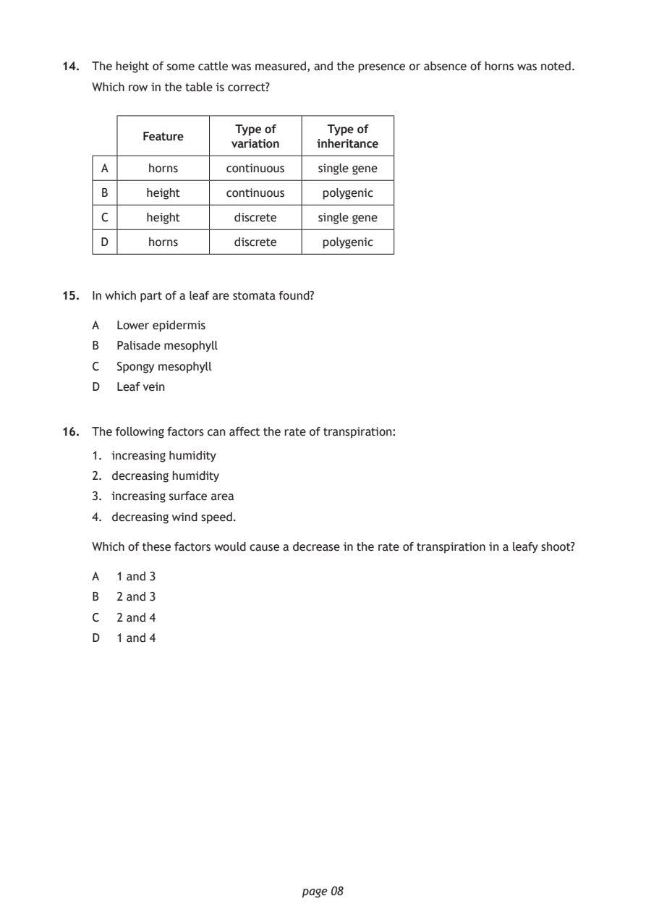
Selectable page text
14. The height of some cattle was measured, and the presence or absence of horns was noted.
Which row in the table is correct?
Type of Type of
Feature
variation inheritance
A horns continuous single gene
B height continuous polygenic
C height discrete single gene
D horns discrete polygenic
15. In which part of a leaf are stomata found?
A Lower epidermis
B Palisade mesophyll
C Spongy mesophyll
D Leaf vein
16. The following factors can affect the rate of transpiration:
1. increasing humidity
2. decreasing humidity
3. increasing surface area
4. decreasing wind speed.
Which of these factors would cause a decrease in the rate of transpiration in a leafy shoot?
A 1 and 3
B 2 and 3
C 2 and 4
D 1 and 4
page 08PDF page 9
Paper 1, Question 17Paper 1, Question 18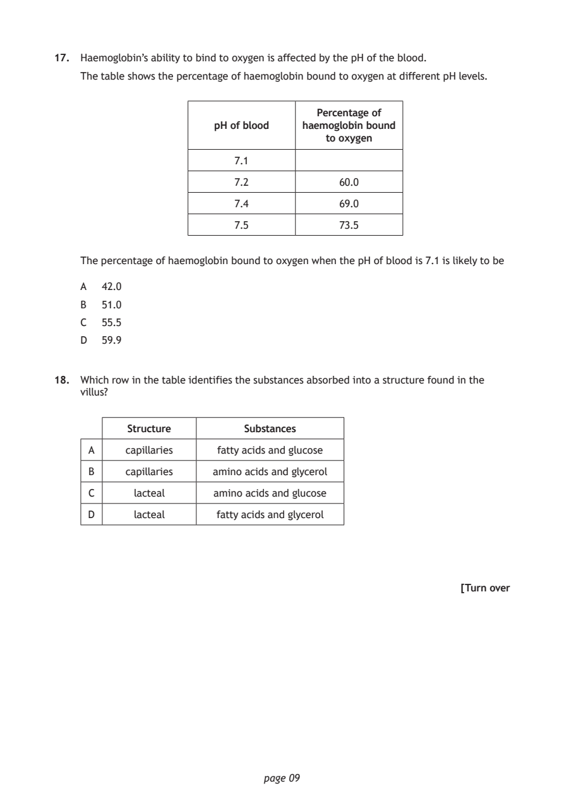
Selectable page text
17. Haemoglobin’s ability to bind to oxygen is affected by the pH of the blood.
The table shows the percentage of haemoglobin bound to oxygen at different pH levels.
Percentage of
pH of blood haemoglobin bound
to oxygen
7.1
7.2 60.0
7.4 69.0
7.5 73.5
The percentage of haemoglobin bound to oxygen when the pH of blood is 7.1 is likely to be
A 42.0
B 51.0
C 55.5
D 59.9
18. Which row in the table identifies the substances absorbed into a structure found in the
villus?
Structure Substances
A capillaries fatty acids and glucose
B capillaries amino acids and glycerol
C lacteal amino acids and glucose
D lacteal fatty acids and glycerol
[Turn over
page 09PDF page 10
Paper 1, Question 19Paper 1, Question 20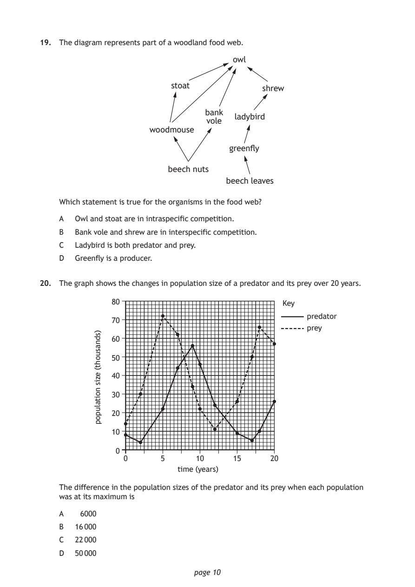
Selectable page text
19. The diagram represents part of a woodland food web.
owl
stoat
shrew
bank
ladybird
vole
woodmouse
greenfly
beech nuts
beech leaves
Which statement is true for the organisms in the food web?
A Owl and stoat are in intraspecific competition.
B Bank vole and shrew are in interspecific competition.
C Ladybird is both predator and prey.
D Greenfly is a producer.
20. The graph shows the changes in population size of a predator and its prey over 20 years.
80 Key
predator
70
prey
60
50
40
30
20
10
0
0 5 10 15 20
time (years)
page 10
)sdnasuoht(
ezis
noitalupop
The difference in the population sizes of the predator and its prey when each population
was at its maximum is
A 6000
B 16 000
C 22 000
D 50 000PDF page 11
Paper 1, Question 21Paper 1, Question 22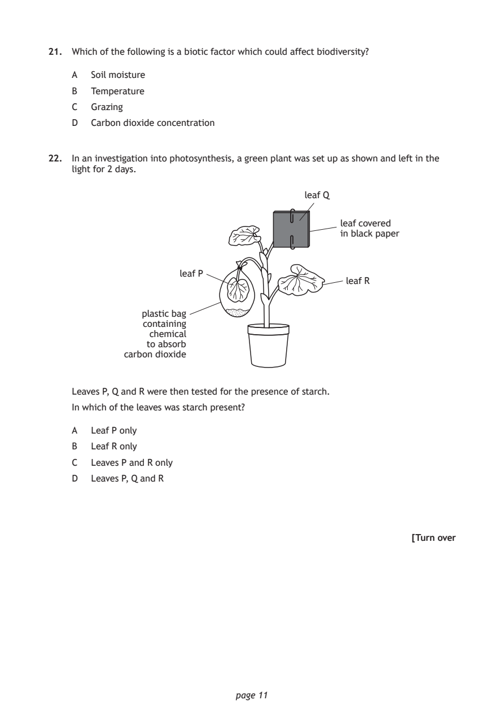
Selectable page text
21. Which of the following is a biotic factor which could affect biodiversity?
A Soil moisture
B Temperature
C Grazing
D Carbon dioxide concentration
22. In an investigation into photosynthesis, a green plant was set up as shown and left in the
light for 2 days.
leaf Q
leaf covered
in black paper
leaf P
leaf R
plastic bag
containing
chemical
to absorb
carbon dioxide
Leaves P, Q and R were then tested for the presence of starch.
In which of the leaves was starch present?
A Leaf P only
B Leaf R only
C Leaves P and R only
D Leaves P, Q and R
[Turn over
page 11PDF page 12
Paper 1, Question 23Paper 1, Question 24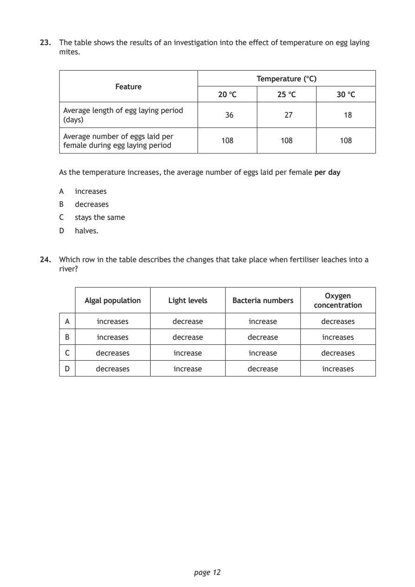
Selectable page text
23. The table shows the results of an investigation into the effect of temperature on egg laying
mites.
Temperature (°C)
Feature
20 °C 25 °C 30 °C
Average length of egg laying period
36 27 18
(days)
Average number of eggs laid per
108 108 108
female during egg laying period
As the temperature increases, the average number of eggs laid per female per day
A increases
B decreases
C stays the same
D halves.
24. Which row in the table describes the changes that take place when fertiliser leaches into a
river?
Oxygen
Algal population Light levels Bacteria numbers
concentration
A increases decrease increase decreases
B increases decrease decrease increases
C decreases increase increase decreases
D decreases increase decrease increases
page 12PDF page 13
Paper 1, Question 25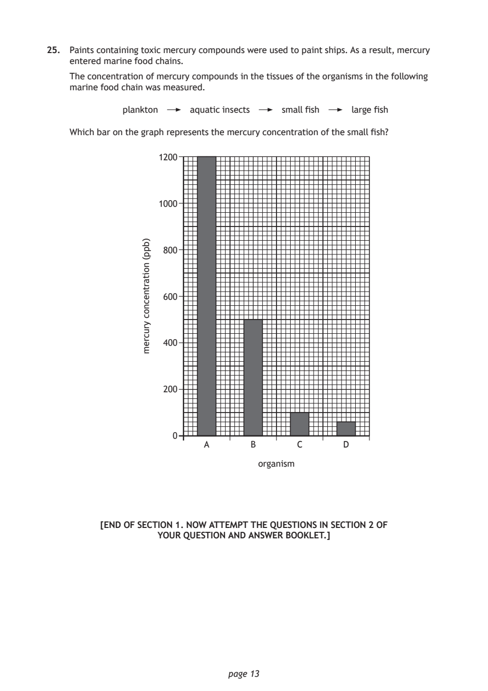
Selectable page text
25. Paints containing toxic mercury compounds were used to paint ships. As a result, mercury
entered marine food chains.
The concentration of mercury compounds in the tissues of the organisms in the following
marine food chain was measured.
plankton aquatic insects small fish large fish
Which bar on the graph represents the mercury concentration of the small fish?
1200
1000
800
600
400
200
0
A B C D
organism
page 13
)bpp(
noitartnecnoc
yrucrem
[END OF SECTION 1. NOW ATTEMPT THE QUESTIONS IN SECTION 2 OF
YOUR QUESTION AND ANSWER BOOKLET.]PDF page 14

Selectable page text
[BLANK PAGE]
DO NOT WRITE ON THIS PAGE
page 14PDF page 15

Selectable page text
[BLANK PAGE]
DO NOT WRITE ON THIS PAGE
page 15PDF page 16

Selectable page text
[BLANK PAGE]
DO NOT WRITE ON THIS PAGE
page 16